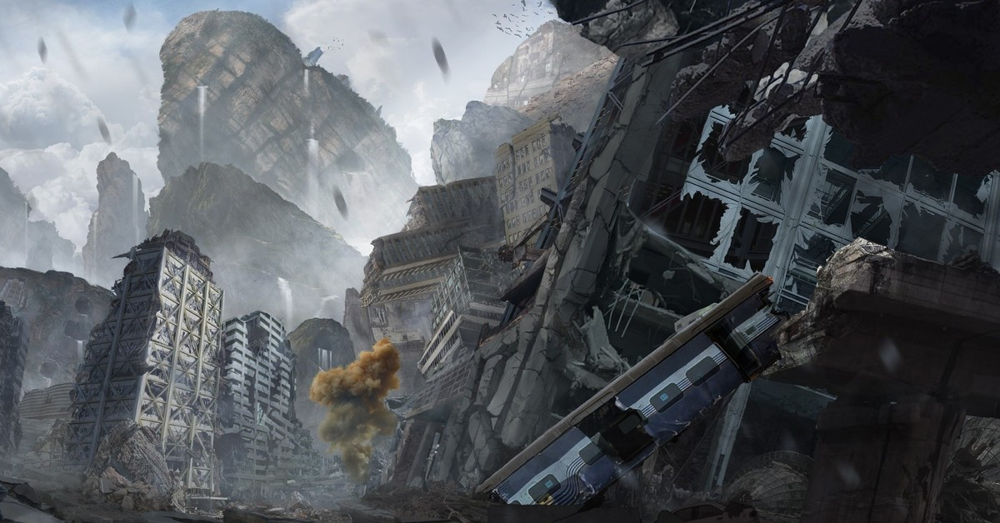
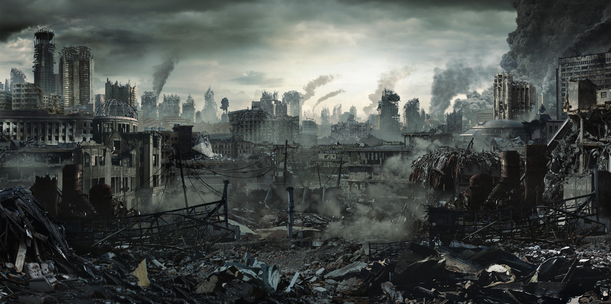
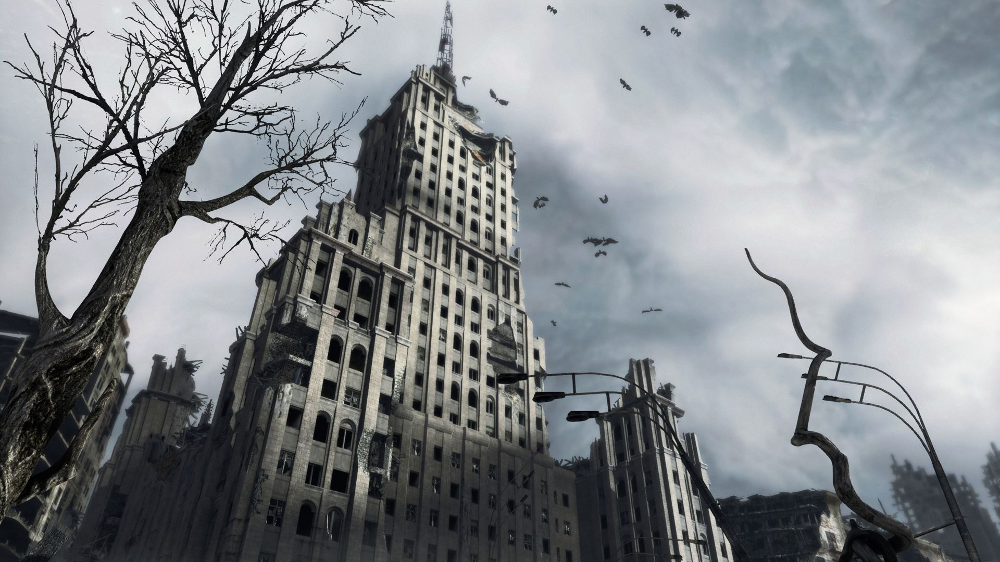
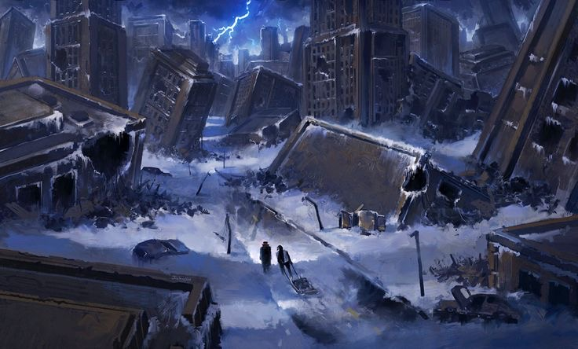
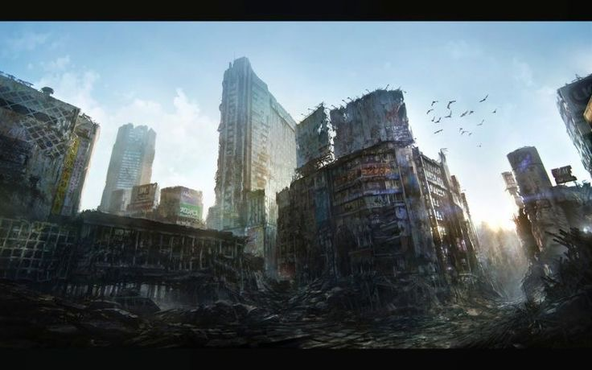
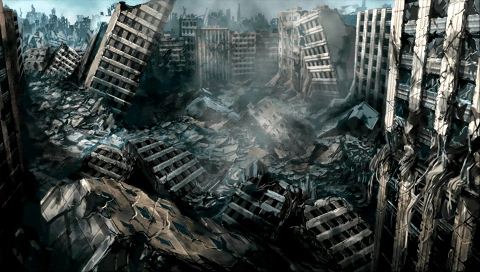

Настоящая публикация подготовлена в соответствии с регламентом информирования населения о состоянии общественной среды. Ряд данных не подлежит раскрытию в открытом доступе в связи с их отношением к категории ограниченного распространения. Тем не менее редакция считает необходимым обозначить общие контуры ситуации, не выходя за рамки допустимого.
Согласно сводкам, поступающим из региональных центров, наблюдаются устойчивые отклонения в функционировании базовых социальных институтов. Отклонения носят не локальный, а системный характер: фиксируются перебои в координации между ведомствами, снижение предсказуемости административных процедур, рост числа незапланированных изменений в нормативных актах. Совокупность указанных факторов создаёт эффект, который в закрытых отчётах описывается термином «средовая нестабильность». Редакция не уполномочена приводить полные формулировки и статистику; отметим лишь, что динамика неблагоприятна.

Отдельно следует указать на участившиеся случаи утраты контроля над информационными потоками. Распространение сведений, не прошедших установленную проверку, приобретает стихийный характер. В ряде регионов зафиксированы инциденты, классифицируемые как «аномальные»; их описание в открытых источниках ограничено. Причины инцидентов устанавливаются. Редакция обращает внимание, что речь идёт не о природных явлениях, а о явлениях общественного порядка — и именно это обстоятельство не позволяет раскрыть их содержание в полном объёме.

В связи с вышеизложенным профильными структурами инициирован ряд мероприятий. Часть из них носит поисковый характер: осуществляется розыск объектов, обладающих повышенной значимостью для стабилизации обстановки. Указанные объекты в служебной переписке обозначаются как «фрагменты» или «осколки»; их происхождение и свойства не подлежат разглашению. Редакция подтверждает лишь сам факт поисковых работ и их приоритетность.

Отдельно отмечается деятельность неких координационных объединений, чьи полномочия и структура не раскрываются. Взаимодействие с ними осуществляется в рамках установленного порядка. Редакция не располагает сведениями, подлежащими публикации, однако считает допустимым указать: ряд решений, принятых в последнее время, связан с необходимостью сохранить преемственность в условиях нарастающей неопределённости.
Редакция напоминает: публикация носит ознакомительный характер и не является исчерпывающей. Полные сведения предоставляются уполномоченным органам по запросу. Ответственность за интерпретацию изложенного лежит на читателе.

